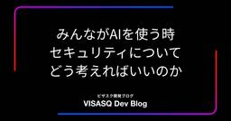
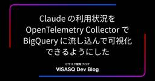

VISASQ Dev Blog
https://tech.visasq.com/
ビザスク開発ブログ
フィード

みんながAIを使う時、セキュリティについてどう考えればいいのか。 73
73
VISASQ Dev Blog
全社でClaudeを安全に活用するために実践したPoC、ハンズオン、Slack支援、機能制限、MCP・コネクタ管理、OpenTelemetryとBigQueryによる利用状況の可視化をCSIRTから紹介します。心理的安全と技術的安全の両面から、利用者の自由と企業のリスク管理をどう両立したかを解説します。
1日前

Claude の利用状況を OpenTelemetry Collector で BigQuery に流し込んで可視化できるようにした 13
VISASQ Dev Blog
🤖 AI執筆について この記事は AI（Claude）が執筆し、筆者が修正・加筆を行なっています。 はじめに こんにちは！インフラチームの高畑です。 最近あまりにも暑すぎますね、まだ 7 月ですよ？この調子で気温が上がっていったら 8 月には溶けて無くなりそうな予感がしています。 皆さんも溶けてしまわないように体調には十分にお気をつけください。 というわけで今回は、Claude Code / Chat / Cowork といった各プロダクトの利用状況を OpenTelemetry Collector 経由で BigQuery に流し込み、社内で可視化できるようにした話を書いていきます。 事の発…
3日前

生成AI でドキュメント 駆動開発をやってみた 1
VISASQ Dev Blog
検索チームの tanker です。 先月会社の自己啓発休暇制度を使いチェコのチェスキー・クルムロフに行ったのですが、早朝の人や車が全くいない街歩きはとても癒されました。 チェスキー・クルムロフ 2026/4に弊社で「【Qiita Bash】エンジニアリングとデザインをつなぐAI活用」イベントが開催され、弊社デザイナーの HIGAshine が発表した以下の話をエンジニア サイドから補完してお話できればと思っています。 note.com まとめ 生成AI及び生成されたドキュメント(仕様書)を中心とした開発をやってみた 生成AI にドキュメントのメンテナンスも一緒にさせることで (開発中は) 常に…
4日前

プロジェクトのコミュニケーションそのものをAIに分析させてみた話
VISASQ Dev Blog
初めまして！ビザスク開発本部QAチームの齊木彩香です。 ビザスク内ではさいきって呼んで！と頑張っています。 長年やりたいと思っていたことを形にできたのでこれから書いていきます。 はじめに 皆さんは、「名もなき家事」という言葉をご存知でしょうか？ 最近に限った話ではありませんが、洗濯や掃除といった分かりやすい家事だけでなく、例えば「お風呂のカビ取り」や「麦茶のやかんを洗って沸かし、冷めたら冷蔵庫に入れる」といった、日常に大量に存在する「タスクの合間にある小さな工程」のような概念です。 私はQAチームの一員として、「どうすればプロジェクトの始まりから終わりまで品質を良い状態で保ち、プロダクトをリリ…
2ヶ月前
Salesforce 組織のメタデータを効率的に管理する
VISASQ Dev Blog
はじめに こんにちは！ Salesforce チームの林です。 Salesforce は、オブジェクトやフィールド、レイアウト、フロー、クラス、権限、各種設定など、組織を構成するほとんどをメタデータで管理することができます。 Salesforce アプリケーションの開発・運用において、メタデータを適切に取得し、管理できる状態を作ることはとても重要ですが、Salesforce は年3回のメジャーバージョンアップを行い、メジャーバージョンアップの度にメタデータの構成が変わるため、メタデータを適切に取得し、その状態を維持することは非常に大変な作業でした。 generate manifest コマンド…
5ヶ月前
AIを活用したGAS開発における新たな共創モデル
VISASQ Dev Blog
1. はじめに こんにちは、コーポレートITチームのナカジマです！ 今回の提案は、現場が本当に必要としている業務効率化を、もっと速く実現するための新しい解決手段として、このモデルの価値を皆さんにご理解いただくことを目指しています。 これは、現場のメンバーがAIの力を借りてGAS（Google Apps Script）開発をグイグイ進め、ITチームが技術面でしっかりサポートするという「現場主導型の共創開発モデル」です。 現場のノウハウとITチームの専門性を組み合わせ、AIのコード生成能力を最大限に活用することで、従来の開発で引っかかっていたボトルネックを解消します。 変化の激しいビジネス環境にも…
5ヶ月前
intercomデータ連携
VISASQ Dev Blog
title はじめに 冬です、寒いです。エキスパート開発チームの尾藤です。 弊社では複数のサービスを提供しており、それに伴い様々な外部サービスを利用しています。その中でも今回はintercomについて概要からデータ連携まで紹介します。 intercomができること www.intercom.com intercomはユーザとのコミュニケーションを一元管理できるSaasツールです。 チャットによる問い合わせ対応、自動メッセージ配信やボットによる応答、さらにユーザー情報の管理や特定条件に基づくアクションの実行など、カスタマーサポートや顧客エンゲージメントに必要な機能をまとめて提供しています。 特に…
5ヶ月前
ビザスクに入社して一年、思うこととは
VISASQ Dev Blog
自己紹介 初めまして。2025年2月に入社しました、QAエンジニアの齋藤です。 茨城県に住んでおり、普段はリモートで勤務しています。👩💻 前職では採用システムを作っている会社でQAエンジニアをしていました。 そこで初めてQAエンジニアというお仕事を始めて、QAエンジニアの魅力に取り憑かれ現在に至っています💘 なぜビザスクを選んだのか 私が転職するにあたって最重視していたのは人間関係でした。 転職したきっかけ自体は別の理由になるのですが、とにかく素敵な人に囲まれたかった（？）ので、最重視していました。 ビザスクではカジュ面を受けずに即一次面接を受けたのですが、その時お話ししたQAチームメンバー…
5ヶ月前
Cloud Run Jobsで実現するSalesforceデータの日次バックアップ内製化
VISASQ Dev Blog
はじめに こんにちは！ インフラチームの酒井とSalesforceチームの伊藤です。 今回はインフラチームとSalesforceチーム合同で開発した「Salesforceデータの日次バックアップ機能」についてご紹介します。 なぜ日次バックアップの仕組みを内製したのか？ Salesforce標準のデータエクスポート機能は週次または月次の頻度に限られておりますが、社内ではBCP（事業継続計画）対策としてより鮮度の高いSalesforceデータをバックアップすることが求められていました。 外部ツールの導入という選択肢もありましたが、ビザスクには自社内にインフラとSalesforceの専門チームが存在…
5ヶ月前
SQLチューニングを業務で対応して新鮮な気持ちになった話
VISASQ Dev Blog
こんにちは、クライアント開発チームのminatoです。 クライアント開発チームでは、クライアントポータルという to B 向けのサービスと、その裏方となる管理画面の開発を担当しております。 私たちのチームでは、プロダクトの開発はもちろんですが、社内の各メンバー（Biz側）からの技術的な問い合わせ対応も大切なミッションの一つです。 きっかけ 私たちの会社のBizメンバーはとても頼もしく、SQLを駆使してRedashで自らデータを分析し、日々の意思決定に活かしています。（これ、入社して非常に驚いたことの一つなのですが、すごくないですか？！) エンジニアとしては、データがビジネスを動かしている実感を…
5ヶ月前
異業種からエンジニアへ転身した人が、次のキャリアにビザスクを選んだ理由
VISASQ Dev Blog
初めまして！2025年12月に入社しました、クライアント開発チームの堀内です！ ビザスクに入社して2ヶ月経ち、せっかくなので入社エントリを書かせていただきました。 実際に働いてみてどうか、中から見たビザスクをお話しできればと思います。少しでも興味を持っていただけたら嬉しいです🙏 自己紹介 私は金融業界からキャリアをスタートし、エンジニアへ転身するという少し変わった経歴を持っています。 地方の金融機関で投資信託の営業や融資係を担当していたのですが、ある日の訪問先でシステム開発に携わる方と話す機会があり、「エンジニア」という仕事に強く惹かれました。 そこから独学やスクールを通してエンジニアへ転身し…
6ヶ月前
SQLAlchemy 2.0 の autocommit モード廃止とその影響
VISASQ Dev Blog
はじめに こんにちは。エキスパート開発チームの中原です。 エキスパート開発チームでは、新機能開発と並行して、技術負債の解消や開発体験の向上にも積極的に取り組んでいます。 今回はその取り組みの1つとして、SQLAlchemy 2.0 への移行について紹介します。 SQLAlchemy 2.0 は、パフォーマンス向上、型ヒントのサポート強化など、多くの改善が含まれます。 一方で autocommit モードが廃止され、トランザクション管理の方法が変更されるなど、既存コードの見直しが必要となります。 本記事では、autocommit モードの挙動と廃止による影響、特に Refreshing/Expi…
6ヶ月前
中の実力を、外の認知へ。VISASQ Dev’s Fika オフサイトレポート
VISASQ Dev Blog
こんにちは！ビザスククライアント開発のBipulです。 現在、ビザスクの開発組織は地方在住のメンバーが何名か在籍しています。リモートでも仕事はスムーズに進みますが、私たちは「物理的な距離を超えた、チームのつながり」も大切にしています。 先日、日本全国からメンバーが渋谷に集まるオフサイトイベント「VISASQ Dev’s Fika」を開催しました。ただの会ではなく、自分たちの組織の価値をみんなで考え直した一日の様子をレポートします。 参加者集合写真 なぜ「Dev's Fika」を開催したのか ビザスクの開発組織は、プロダクトの成長とともにメンバーが増え、役割も広がってきました。日々の開発は順調で…
6ヶ月前
PythonとDjangoをアップデートする際に便利だったツールの紹介
VISASQ Dev Blog
Python や Django のバージョンアップデートは、新機能の利用や脆弱性対策のために欠かせない作業です。しかし、非推奨になった API の洗い出しや、新しい構文への書き換えを手動で行うのは骨が折れます。本記事では、アップデート作業の効率化に役立った3つのツールを紹介します。 背景 Python や Django のアップデートを行う際は、既存のコードが新しいバージョンでも動作するかを確認するだけでなく、非推奨となった機能や古い記法を使用している箇所を洗い出すことも重要です。非推奨機能は将来のバージョンで削除される可能性があり、古い記法は新しい書き方に置き換えることでコードの可読性や保守…
6ヶ月前
AI Engineering Summit Tokyo 2025 参加&登壇してきました
VISASQ Dev Blog
検索チームの友利です。 AI Engineering Summit Tokyo 2025に参加&登壇してきました。 今回のイベントは、オフライン開催に加えて、オンライン配信も実施されるハイブリッド形式でした。AIプロダクトやLLM、MCP、AIエージェント、LLMOps など、AIエンジニアリングに関わる多様なテーマがカバーされており、開発者が日々直面する課題とそれへの取り組みが共有される場となっていました。 登壇内容 Co-CTOの青野と私が「ビザスクの現在地と未来 〜生成AI活用事例とグローバルな開発組織のリアル〜」というタイトルで登壇しました。 speakerdeck.com ビザスクで…
7ヶ月前
クライアントログイン情報フロー + Bulk API 2.0によるSalesforce一括データクエリ
VISASQ Dev Blog
はじめに こんにちは！ 開発部 Salesforceチームの伊藤です。 今回はSalesforce組織にOAuth 2.0 クライアントログイン情報フローの接続アプリケーション設定を行い、Bulk API 2.0による一括データクエリを試してみたのでご紹介します。 OAuth 2.0 クライアントログイン情報フロー Winter'23 リリースからサポートが開始された、ブラウザを介したユーザー認証を必要としないサーバー間連携に最適化された認証フローです。 Salesforceの接続アプリケーションから取得できる「コンシューマー鍵（client_id）」と「コンシューマーの秘密（client_s…
7ヶ月前
DevinでJiraのチケットを起票する
VISASQ Dev Blog
はじめに VisasQ Inc. Advent Calendar 2025 5日目 の記事です。 こんにちは！インフラチームの坂本です。 インフラチームでは、クラウドインフラ(GCP)の管理・各アプリケーションチーム共通で利用しているようなライブラリ群・認証基盤などの管理をしています。 インフラは基本terraform管理をしていますのでPullRequestでのやり取りとなるのですが、 弊社でterraformで管理していない部分(DNSレコード更新やリダイレクト処理)などがたまに発生します。 その依頼を受けた場合にJiraのチケットを手動で作成するのが面倒だったので、 Devinの Pla…
8ヶ月前
SalesforceのAPI使用状況をSlackに通知する仕組みを作った話
VISASQ Dev Blog
はじめに こんにちは！Salesforceチームの原田です。 今回は、SalesforceのAPI使用状況をSlackに通知する仕組みについてご紹介します。 SalesforceのAPIコール数とは、外部システムからSalesforceへ行われるAPI呼び出しの合計回数を指します。 Salesforceはマルチテナント環境で複数企業がサーバーリソースを共有しているため、すべての顧客が公平に利用できるよう 24時間あたりに実行できるAPIリクエスト数の上限 が定められています。 この上限を超えるとAPIリクエストが拒否され、外部連携の処理が止まってしまう可能性があります。 ビザスクでも複数の外部…
8ヶ月前
Vue Fes Japan 2025 にゴールドスポンサーとして参加しました！ & 振り返り会をしました
VISASQ Dev Blog
クリエイティブウォールの前で集合写真！ステキな Vue Fes Japan 2025 クッションや T シャツ、リストバンドなどもたくさん購入しました！🎁 こんにちは！株式会社ビザスクの横断チーム（開発部）の足立です。 Vue Fes Japan 2025 10/25 (土) 大変お疲れ様でした！ ご参加された方には思い出に、ご興味のある方には当日の様子が伝わる記事となれば幸いです！ 🥳 🥳 🥳 Vue Fes とは… vuefes.jp 目次 目次 Vue Fes Japan 2025 と ビザスク メンバー ビザスクでの準備の様子 当日の様子 オープニング ご挨拶 キーノート ビザスクのブ…
9ヶ月前
React Vs Vue [English]
VISASQ Dev Blog
Introduction After spending years developing with React and Nextjs, I recently joined VISASQ where almost all of the frontend development happens in Vue. I was in a team where we migrated from Vue 2 to Vue 3 and currently in a team where we are using Vue3 with Nuxt 3 (recently upgraded to Nuxt 4). T…
9ヶ月前
React vs Vue [日本語]
VISASQ Dev Blog
Introduction 私は長年にわたりReactおよびNext.jsを用いた開発に従事してきましたが、最近、フロントエンド開発の大部分がVueで行われているVisasqに入社しました。 入社後、まずVue 2からVue 3への移行プロジェクトに携わり、現在はVue 3とNuxt 3（最近Nuxt 4へアップグレード）を用いたチームに所属しています。この一連の移行経験は、実際のプロジェクトを通じて両フレームワークを比較するよい機会となりました。 Reactの柔軟かつ自由度の高いエコシステムから、Vueのより構造化された環境へと移行したことで、開発体験における多くの発見がありました。また、この…
9ヶ月前
Auth0による認証方法を完全に理解した
VISASQ Dev Blog
こんにちは！クライアント開発チームの山中です。 ビザスクでは認証にAuth0を使用しており、Auth0による認証の仕組みを調べる機会があったので、せっかくならテックブログにまとめよう！と思い立ち、Auth0を使った実装方法についてまとめてみました！ JWT認証とは JWT（JSON Web Tokenの略、読み方はジョット）認証は、トークンベースの認証方式です。従来のcookieとDB側のセッション情報を使ったセッションベース認証とは異なり、API側でユーザーのセッション情報を保持しません。 従来のセッション認証との違い 項目 セッション認証 JWT認証 状態管理 ステートフル（サーバーがセッ…
1年前
SalesforceとDocuSignをJWT認証＋指定ログイン情報で安全に連携する
VISASQ Dev Blog
はじめに こんにちは！Salesforceチームの原田です。 今回は、SalesforceとDocuSignをJWT認証＋指定ログイン情報で安全に連携する方法をご紹介します。 これを使えば、DocuSign APIを安全かつシンプルに呼び出すことができ、環境ごとの設定切り替えやトークン管理も自動化できます。 従来のJWT認証実装の課題 Apexの HttpRequest() を使えばDocuSign APIにアクセスできますが、JWT認証を組み込むとコードがかなり長くなります。 例：従来のJWT認証コード（抜粋） // 1. JWTトークンを作成 String jwtToken = creat…
1年前
アプリケーションのビルドを高速化した話
VISASQ Dev Blog
はじめに こんにちは！基盤チームの高畑です。 最近異常なほど暑いですが、そんな中車のフロントガラスの油膜とりをしていたら軽度の熱中症のような感じになり久々に頭から水を被りました。 こんな暑さの中洗車とかするもんではありませんね、皆さんも熱中症にはくれぐれもお気をつけください。 ビザスクではアプリケーションのビルド・デプロイする際に Cloud Build を利用しています。これまで Cloud Build のなかで kaniko を利用してビルドを行ってきたのですが、なんと 2025/06/03 に Public Archive されてしまいました。 github.com そこで、kaniko…
1年前
たまにはBizメンバーと熱く語りたい！
VISASQ Dev Blog
このイベントのあとチームで 渋谷 Bunkamura 近くのレストランに行ったんですが、ドリンクからデザートまで野菜尽くしでとても美味しかったです！検索チームの tanker です。 tech.visasq.com 検索チームでは半期毎にオフサイトを開催しており、今回はビジネスメンバーと今ある課題とそれに対するアプローチについて熱く議論してきました。 背景として、自チームでサービスは運用しておらず各サービスに機能部分を提供している特性上、各サービスの "細かな違和感" のキャッチアップがしずらいという課題感がありました。 ちなみに、検索チームという名前なので「検索システム」だけ作っていると思わ…
1年前
Atlassian Intelligenceをトライアル利用しました
VISASQ Dev Blog
こんにちは、ITチームのナカジマです。 チームではコーポレート開発エンジニアとしてアプリのシステム連携やシステム導入を通して業務効率化や自動化を行なっています。 お仕事内容（過去の記事） tech.visasq.com トライアル背景 生成AIの進化は著しく、ITチームとして従業員にAIの利便性をより深く実感してもらいたいという思いがあり、また質問への回答を得るだけの段階から一歩進んで、AIに学習させて活用するフェーズへとステップアップしたいという思いもありました。 そこですでに社内で提供しているサービスに組み込まれているAI機能の活用を考え、中でも、特にJira Service Manage…
1年前
gunicorn/gthreadのロードバランシングを調査
VISASQ Dev Blog
gunicorn/gthreadのロードバランシングを調査 基盤チームの寺坂です。 エンジニアの皆さま（あるいはそうでなくても皆さま）におかれましては「前提を確認する」ことの重要性を存じているかと思います。 以前、他のエンジニアが調査したgunicornのパフォーマンスについて、さらに深掘りしてみました。 低ワークロードであれば理論値が出ると思い込んでいた私にとっては信じたくない程度には衝撃的だったので、自分でも調べてみたいと思っていました。 tech.visasq.com 概要・結論 本記事では、実環境での発生状況は別として、技術的な観点で原因の理解を試みます。 パフォーマンスを安定させたい…
1年前
Google Cloud VMのパッケージアップデートをCloud Workflowsで自動化する
VISASQ Dev Blog
はじめに こんにちは！基盤チームの酒井です。 毎年言っている気がしますが、特に今年の夏は暑すぎますね…。 アイスクリームではなく氷菓を食べると内臓が冷えて涼しくなるという情報を聞いてからガリガリ君ばかり食べています。 この間、なんと久しぶりに当たって小学生の頃を思い出して懐かしくなりました。 さて、そんな夏の思い出に浸っている場合ではありませんね。話は変わりますが、VMのパッケージアップデート、皆さんはどのように行っていますか？ Google CloudにはVM Managerのパッチという便利な機能がありますが、今回はCloud Workflowsを組み合わせて、さらに柔軟な自動化を実現して…
1年前
ビザスクの社外取締役に平栗 遵宜さんが就任しました！
VISASQ Dev Blog
こんにちは！HR本部で開発・デザイナー職採用を担当しております、原田です。 この度、2025年5月30日付けで平栗 遵宜さんがビザスク社外取締役に就任しました！freee社の開発責任者としてエンジニア組織を統括していた平栗さんにご参画いただけることとなり、非常に心強い気持ちです。 そんな平栗さんに就任の背景などを伺いましたのでご紹介します！ 平栗 遵宜 社外取締役（監査等委員） 2012年にCFO株式会社（現 フリー株式会社）に入社し、ソフトウェアエンジニアとしてプロダクトリリースに携わる。その後、同社の開発責任者として開発戦略を統括し、2019年2月取締役に就任。東京大学法学部、千葉大学専門…
1年前